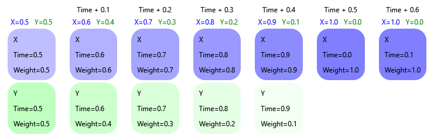
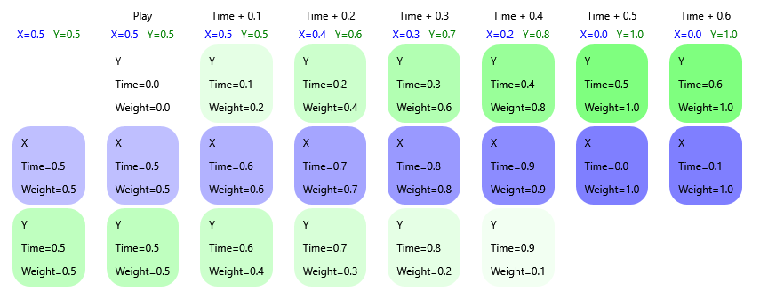
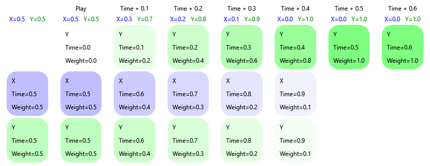
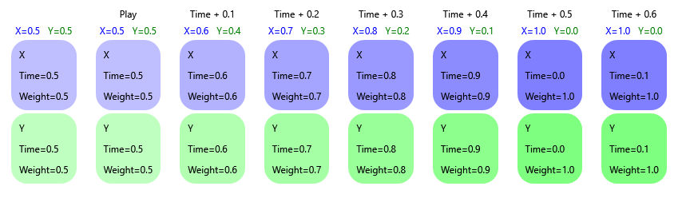
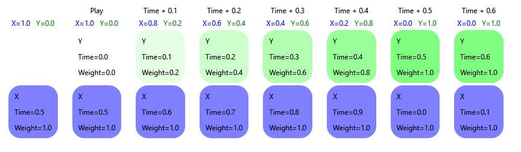
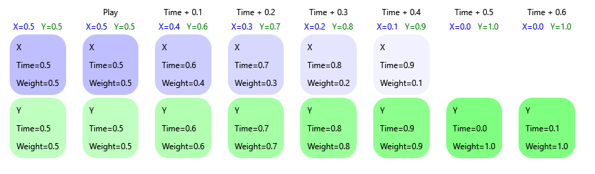
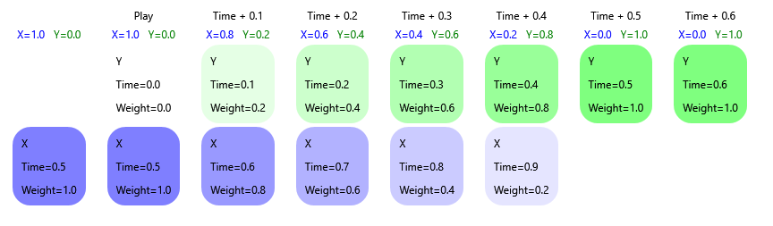

|
Rebel Fork Framework
|
Animation resource describes abstract animation with specified length and a set of tracks describing how values change over time.
Animation time range always goes from 0 to Length, inclusive.
Each animation track consists of key frames, containing time, value, and optional tangents for cubic spline interpolation.
There are two types of animation tracks:
Track names must be unique within a type.
Animation doesn't have any logic except sampling tracks by time. Track names don't have any semantics within Animation itself.
AnimationController doesn't play Animation as is, it needs additional configuration describing how exactly animation is played. AnimationParameters specifies this configuration.
Animation resource, animation name hash and animation instanceIndex are filled automatically and should stay the same during playback.
Layer controls the order in which animations are applied. When applied, animations are sorted by layer. Order of animations within the same layer is preserved.
If animation is not Looped and RemoveOnCompletion is set, animation will be removed automatically when time reaches Time.Max (when Speed is positive) or Time.Min (when Speed is negative).
Time of animation has current Time.Value and is always constrained between Time.Min and Time.Max.
Speed controls the rate of change in Time over real time.
If Time.Value of Looped animation reaches Time.Max (when Speed is positive) or Time.Min (when Speed is negative), Time.Value is snapped to the opposite extreme.
If StartBone is set, animation will be filtered to the specified sub-hierarchy of bones.
If AutoFadeOutTime is set and the animation is not Looped, animation will be smoothly faded out after it is finished.
BlendMode controls how the animation is applied:
Weight indicates the current weight of animations (see above). TargetWeight is the future weight value which will be fully applied in TargetWeightDelay seconds.
Weight automatically linearly transitions into TargetWeight over time, which is useful for fade-ins and fade-outs.
If RemoveOnZeroWeight is set (and it is set by default), animations that reach zero Weight are removed automatically.
AnimationController is the main tool of controlling animations in Scene.
AnimationController allows user to play arbitrary set of animations with different settings. It can be used as a base for more high-level animation systems like animation state machines.
Animations are defined by the instances of the Animation class.
When AnimationController has no animations playing, it has no effect on the Scene.
If the same Animation is being played by AnimationController simultaneously more than once, each instance is assigned with unique instanceIndex.
Animation tracks from Animation are applied based on track name and track type.
Transformation tracks can be applied only to the Node positions, rotations and scales.
Track name is used to search Node by name among all direct or indirect children of AnimationController or StartBone (if specified). Node that represents a Bone of a sibling AnimatedModel is preferred.
Transformation tracks that reference a Bone are evaluated in worker thread during AnimatedModel update.
Transformation tracks that reference any other Node, are applied on AnimationController::Update.
Variant tracks are applied to the attributes of Nodes and Components.
Track name is used as path relative to the AnimationController regardless of StartBone:
[path/to/node/]@[ComponentName[#Index]]/Attribute[/etc]
Examples:
Track name until @ represents relative path to animated Node.
Track name between @ and the next / references the component name with optional index (if there are multiple instances of the same component). If empty, Node attribute is referenced.
Next part of the path references the attribute name. In some specific cases, it may also reference sub-attribute.
Special cases of sub-attribute animations:
Note: be careful when transformation tracks are applied in a hierarchy. Example:
In this hierarchy, transformation track with name "Child B" will be applied to the Node at line 5, while the user may have wanted to apply it to the closest child.
There's low-level API that provides basic access to played animations described as array of AnimationParameters.
| Function | Description |
|---|---|
| GetNumAnimations | Return number of playing animations. |
| GetAnimationParameters | Return currently playing animation at given index. |
| AddAnimation | Append new animation to the end of the animation array. |
| UpdateAnimation | Update parameters of one playing animation. It's better to use GetAnimationParameters as base value for more predictable results. Animation and instanceIndex must remain unchanged. |
| RemoveAnimation | Remove playing animation at given index. |
Note that no smoothing is performed by low-level API, all changes are effective immediately.
Medium level allows easier and almost user-friendly manipulation of played animations.
Functions that reference playing animation by Animation will work with the latest added animation if the choice is ambiguous.
| Function | Description |
|---|---|
| FindLastAnimation | Get the latest played instance of Animation. |
| GetLastAnimationParameters | Get the parameters of the latest played instance of Animation. |
| IsPlaying | Check whether there is at least one playing Animation. |
| PlayNew | Play new instance of animation with specified parameters with smooth fade-in. |
| PlayNewExclusive | Same as PlayNew, but also fade out all other animations with the same layer. |
| PlayExisting | Play new instance of Animation with specified parameters and smooth fade-in if this Animation is not yet played. Otherwise, adjust Speed and smoothly adjust Weight of currently played animation, keeping other parameters intact. |
| PlayExistingExclusive | Same as PlayExisting, but also fade out all other animations with the same layer. |
| Fade | Fade animation to the specified weight. If RemoveOnZeroWeight is true, fading to zero weight will remove animation. |
| Stop | Fade out and remove one animation. |
| StopLayer | Stop all animations with specified layer. |
| StopLayerExcept | Stop all animations with specified layer except animation at specified index. |
| StopAll | Stop all animations. |
| UpdateAnimationTime | Adjust time of the animation, keeping all other parameters intact. |
| UpdateAnimationWeight | Adjust weight of the animation, keeping all other parameters intact. |
| UpdateAnimationSpeed | Adjust speed of the animation, keeping all other parameters intact. |
The Animation Controller orchestrates animations, ensuring they are applied in the correct order and allowing for smooth transitions between them. When a new animation is played, it is added to a list of active animations. The latest animation is layered on top of existing ones, influencing the final output.
To illustrate this, consider the following sample diagram. Each column represents a moment in time. Starting with a base state where the Y animation is playing, we add an X animation. The diagram starts in the middle of transition to the X animation:

In this scenario, we have two animations affecting the node's position:
"X" Animation: Sets the node position to Vector3(1,0,0).
"Y" Animation: Sets the node position to Vector3(0,1,0).
This allows for easy tracking of the resulting node position after all animations are applied in order. The resulting node position is shown under the "Time" header.
In the diagram, animations are shown in a visual stack order, with the latest animation added on top of existing ones. Let's examine the base state of the animation controller, where a Y animation is playing. If an X animation is added in an exclusive move, the Y animation will fade out (its weight decreasing every frame) while the X animation fades in (its weight increasing every frame). Observe how Y animation gets deleted when the weight of it goes to 0.
Next, we call the Play* method again with the Y animation, observing how it impacts the current state.
Upon executing PlayNew, a new instance of the Y animation is added regardless of any existing instances. This addition does not occur in exclusive mode, so the weight of the current X animation continues to increase. Consequently, we end up with both X and the latest Y animations in the list. The latest Y animation fully overrides the effect of the X animation. Meanwhile, the original Y animation is removed once it fades away.

When PlayNewExclusive is executed, it adds a new instance of the Y animation, disregarding any existing instances. This addition occurs in exclusive mode, causing the current X animation to start fading away. As a result, the list ends up with only one animation — the latest Y animation.

When PlayExisting is executed, it checks if the same animation (Y animation in this case) already exists. If it does, it boosts its weight to 1. Since this method doesn't play the animation in exclusive mode, the existing animations retain their dynamics.
Below are two diagrams: one for when the Y animation exists in the list, and one for when it doesn't. Notice how the outcomes differ significantly. If the Y animation already exists, it is overridden by the later-added X animation, meaning PlayExisting doesn't alter the final node position and the animation time is preserved.

If Y doesn't exist, the new Y animation overrides the existing X animation, thus influencing the node's position.

When PlayExistingExclusive is executed, it checks if the same animation (Y animation in this case) already exists. If it does, it boosts its weight to 1. Since this method plays the animation in exclusive mode, existing animations are faded away. Below are two diagrams: one for the scenario where the Y animation is already in the list, and one where it isn't. Notice that the results of this operation are similar. When the Y animation already exists, the animation time that dictates the phase of the animation is preserved. However, the dynamics differ in each case. When the Y animation already exists, the weight of X dictates the overall result.

In contrast, when the Y animation is newly added, its weight dictates the final node position.
